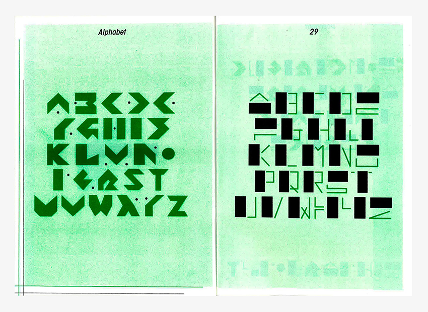
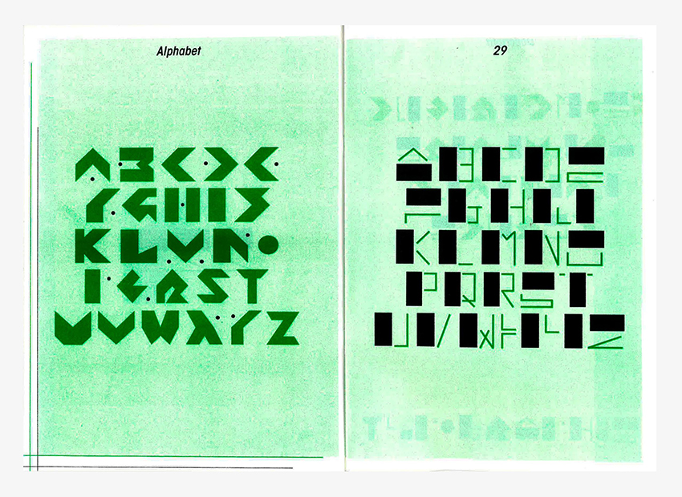

Constructivisme
poster sérigraphié au format 60✖️80 cm, ainsi qu’une édition 21✖️29,7 cm accompagnée de 4 cartes imprimées en risographie
Ces deux typographies sont inspirées du mouvement constructivisme dans lequel Malevitch a joué un rôle important. La composition donne un rythme aux objets imprimés en jouant sur l’alternance de vides et de pleins, sur les changements de corps, la confrontation de mots et de corps de textes horizontaux, verticaux.
 
